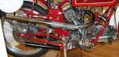
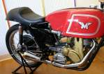
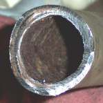
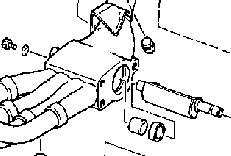
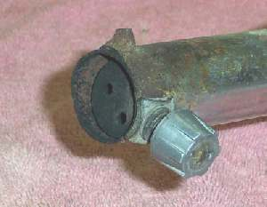
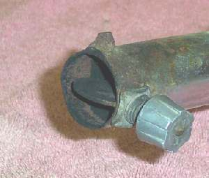
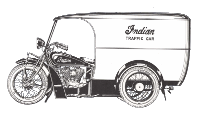
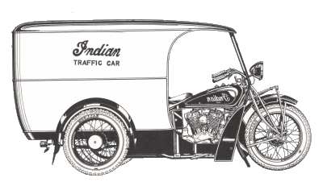

After combustion has taken place in an engine the exhaust gases have to have somewhere to go. In a motorcycle we aim the gases out the exhaust port and into the exhaust pipe. On four stroke racing bikes that pipe could be a long straight pipe or a short header pipe and a megaphone.The exhaust pipe works because of the pressure waves generated when the exhaust valve opens. These waves travel at the speed of sound (Maybe even faster!) and create positive and negative pressure. Each change in the diameter of the pipe changes this pressure wave from positive pressure to negative pressure or visa versa. By changing pipe diameter and length we can time when the pressure wave is at exhaust valve and help the evacuation of exhaust gases at a specific RPM. The only problem is that this effect can only be one RPM, like 9500 or 8000 or 10,000. If you are set up for one RPM the effect does not work so well at other RPM.
 
By matching the length and diameter of the exhaust header pipe. The shape of the muffler. The cam timing and lift. The length of the intake track. The size of the carburetor. The shape of the air cleaner and how much air it passes. By matching all these things, the Motorcycle Manufacturer produces a muffler that keeps the noise of combustion down but still allows the engine to produce power at a wide range of RPMs. Now we come along and drill holes in the muffler, throwing everything out of whack, just because we want more noise.
Back in the day, we used Suff-or-Nots! Lots more horsepower... or so we thought. I'm not real sure we went faster, but I can tell you for sure we sounded faster. I'm afraid those days are gone forever. Motorcycle engines, from the early 1980's on, are very finely tuned machines. The old Snuff-or-Not trick just will not work anymore.
 Snuff-or-Not Closed |
 Snuff-or-Not Open |
The best policy is to leave the exhaust alone. This noise thing is really getting out of hand. There is this idea out there that the more noise you make the safer you are. People will hear you and not run you over. Having been run off the road by people who DID see me and having talked to many people who have had the same experience, I'm not so sure this is a good policy. I feel loud pipes just get the general public mad at you and the police interested in you. Neither one of which is good. The Federal government is starting to take notice and they will simply fine the manufacturers of loud pipes out of business.
The biggest problem with stock exhaust pipes is the environment they work in. For every gallon of gas an engine burns a gallon of water vapor goes out the exhaust pipe. This water produces lots of rust inside the exhaust pipe. This would not be so bad if you could pick up a cheap replacement muffler for $40.00 at the local parts shop like you can with a car. Unfortunately, you can't. Motorcycle mufflers and header pipes cost a small fortune. The stock factory muffler for a Honda Shadow can cost $970.00.
The only good inexpensive cure is an aftermarket exhaust pipe. Aftermarket pipes for that Shadow can cost as little as $300.00. Much easier to live with. Some aftermarket exhausts use fiberglass packing and are rebuildable. The big trouble with all aftermarket, non stock mufflers is that the engine you put them on may or may not run right. If they put out a jet kit for your engine, things may be OK. If not, you will need to look at the Carburetor tuning page Here. One thing you might consider. The louder the pipe, the better the odds are that you will have to rejet the carburetor(s). That is just what I have observed. No scientific proof for that. Just my opinion.
If it is just the muffler that is rusted out you can sometimes get a slip on muffler. Super Trapp sells a 3" and 4" diameter muffler that is adjustable. You add plates to the end of the pipe. More plates mean less back pressure and more sound. Less plates less sound and more back pressure. You can tune the pipe to your engine. These work good for dirt bikes because the plates also act as spark arrestors. You need a spark arrestor anytime you ride off road. Spark arrestors stop carbon particles that have a diameter greater than 0.023". This prevents exhaust sparks from starting fires. The Super Trapp also has replaceable fiberglass packing to quiet the exhaust note. As of 2007 prices are in the $150.00-200.00 range.
The cheapest cure is to repair the pipe you have. This may or may not be a good idea. Once a pipe rusts through it usually rusts through in a lot of places. The problem is that the chrome covers a multitude of rust holes. Old car muffler repair guys like to take a big pair of slip joint pliers and try to crush the exhaust pipe. They try all over the pipe and if they can make that exhaust pipe crush in any one place they replace the pipe. Your pipe is chromed so use padding on the jaws of the pliers. If you find a weak spot or already have a hole you can take a piece of thick sheet metal and braze or weld a patch on. They sell a kind of fiberglass muffler tape which can be wrapped around the pipe sealing the hole. This is very gross and ugly but it is cheap and just might get you through one more riding season.
Bottom line? You have three choices. From expensive to cheap.
- Replace the muffler with stock parts.
- Replace the muffler with an aftermarket unit.
- fix what you have.


Back to M/C Repair Course 
Did this page help you? Would you like to help us? If so Click HERE
Copyright © 1999-2007 dansmc.com. All rights reserved.